MRS SQL Reference
This document discusses the MySQL REST Service (MRS) DDL - SQL Extension. The MRS DDL - SQL Extension adds a set of MRS specific DDL statements to the MySQL Shell SQL handling in order to provide a familiar management interface to MySQL developers and DBAs.
Chapter Overview
Please also see
- MySQL REST Service - Developer’s Guide - This book explains how to install and configure the MySQL REST Service (MRS) as well as how to access the data through REST calls.
- MySQL REST Service - Core REST APIs - This book provides examples of using the MySQL REST Service queries and other operations against tables and views after you have REST-enabled them.
- MySQL REST Service - SDK Reference - This book explains how to work with the MRS Software Development Kit and discusses the Client APIs.
1 Introduction
It has been an essential goal of the MySQL REST Service (MRS) to provide a management interface that feels familiar to MySQL developers and DBAs and integrates well into their existing processes.
For this purpose the MySQL REST Service plugins directly into the MySQL Shell and MySQL Shell for VS Code. It extends the available SQL commands to include DDL (Data Definition Language) statements that allow managing the MySQL REST Service in an easy and seamless way.
This makes the process of creating a MySQL REST Service for your application as easy as creating a database schema or table.
Example
The following script configures the MySQL REST
Service, creates a new REST service
/myService and adds a REST schema
/sakila and a REST data mapping view
/actor that lists all actors and their film
titles.
CONFIGURE REST METADATA;
CREATE REST SERVICE /myService;
USE REST SERVICE /myService;
CREATE REST SCHEMA /sakila FROM `sakila`;
USE REST SCHEMA /sakila;
CREATE REST VIEW /actor
AS `sakila`.`actor` {
actorId: actor_id @SORTABLE,
firstName: first_name,
lastName: last_name,
lastUpdate: last_update,
filmActor: sakila.film_actor @REDUCETO(title) {
film: sakila.film @UNNEST {
title: title
}
}
}
AUTHENTICATION REQUIRED;Note: Please ensure to install the MySQL sakila example database schema before running the MRS DDL script above.
2 CONFIGURE and CREATE
2.1 CONFIGURE REST METADATA
The CONFIGURE REST METADATA statement is used to perform the initial configuration of the MySQL REST Service on a MySQL Server instance or InnoDB Cluster/Set.
It will create the
mysql_rest_service_metadata database
schema.
Please note that the MySQL account used to execute the statement needs the required privileges to create database schemas.
Syntax
configureRestMetadataStatement:
CONFIGURE REST METADATA restMetadataOptions?
;
restMetadataOptions: (
enabledDisabled
| jsonOptions
| updateIfAvailable
)+
;configureRestMetadataStatement ::= 
restMetadataOptions ::= 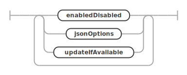
Example
CONFIGURE REST METADATA;2.1.1 Enable or Disable the MySQL REST Service
The enabledDisabled option specifies if the MySQL REST Service should be enabled or disabled after the configuration operation. The default is set to enable the MySQL REST Service.
enabledDisabled:
ENABLED
| DISABLED
;enabledDisabled ::= 
Examples
The following example configures the MySQL REST Service and enables it and updates the metadata schema, if possible.
CONFIGURE REST METADATA
ENABLED
UPDATE IF AVAILABLE;The following example configures the MySQL REST Service and enables the GTID cache and sets authentication options.
CONFIGURE REST METADATA
ENABLED
OPTIONS {
"gtid": {
"cache": {
"enable": true,
"refresh_rate": 5,
"refresh_when_increases_by": 500
}
},
"authentication": {
"throttling": {
"perAccount": {
"minimumTimeBetweenRequestsInMs": 1500,
"maximumAttemptsPerMinute": 5
},
"perHost": {
"minimumTimeBetweenRequestsInMs": 1500,
"maximumAttemptsPerMinute": 5
},
"blockWhenAttemptsExceededInSeconds": 120
}
}
};2.1.2 REST Configuration Json Options
The jsonOptions allow to set a number of specific options for the service.
jsonOptions:
OPTIONS jsonValue
;jsonOptions ::= 
These options can include the following JSON keys.
authentication- Defines global authentication parameters valid for all MySQL Routers
throttling- Used to limit the authentication attempts to prevent brute force attacks on account information
perAccount- Settings that apply per MRS account
minimumTimeBetweenRequestsInMs- Sets the minimum time between connection attempts. If a client tries to authenticate faster than that the request will be rejected. The value is given in milliseconds.
maximumAttemptsPerMinute- Sets the maximum amount of attempts per minute. If a
client tries to authenticate more often that that
further attempts will be blocked for the amount of
seconds specified in the
blockWhenAttemptsExceededInSecondsvalue.
- Sets the maximum amount of attempts per minute. If a
client tries to authenticate more often that that
further attempts will be blocked for the amount of
seconds specified in the
perHost- Settings that apply per host from where a client tries to connect
minimumTimeBetweenRequestsInMsmaximumAttemptsPerMinute
blockWhenAttemptsExceededInSeconds- Sets the amount of time the account or client host will be blocked from authentication. The value is given in seconds.
gtid- Defines global settings for the MySQL GTID handling, using the following fields.
cache- Is used to configure the MySQL Router’s GTID cache.
enable- If set to
trueGTIDs will be cached by the MySQL Router.
- If set to
refresh_rate- Defines how often the GTID cache will be refreshed. Set seconds, e.g. 5.
refresh_when_increases_by- In addition to the time based refresh, the GTID cache can also be refreshed based on the number of transactions that happened since the last refresh. Set in number of transactions, e.g. 500.
responseCache- Global options for the REST endpoint response cache,
which keeps an in-memory cache of responses to GET
requests on tables, views, procedures and functions. To
enable caching of an endpoint, you must also set the
cache_ttloption for each object to be cached. maxCacheSize- Maximum size of the cache. Default is 1M.
- Global options for the REST endpoint response cache,
which keeps an in-memory cache of responses to GET
requests on tables, views, procedures and functions. To
enable caching of an endpoint, you must also set the
fileCache- Global options for the static file data cache, which keeps an in-memory cache of responses to GET requests on content set files.
maxCacheSize- Maximum size of the cache. Default is 1M.
defaultStaticContent- Allows the definition of static content for the root
path
/that will be returned for file paths matching the given JSON keys. A JSON keyindex.htmlwill be served as/index.htmlby the MySQL Router. The file content needs to be Base64 encoded. If the same JSON key is used fordefaultStaticContentas well as fordefaultRedirects, the redirect is prioritized.
- Allows the definition of static content for the root
path
defaultRedirects- Is used to define internal redirects performed by
the MySQL Router. This can be used to expose content of
a REST service on the root path
/. A JSON keyindex.htmlholding the value/myService/myContentSet/index.htmlwill exposed the corresponding file from the given path as/index.html.
- Is used to define internal redirects performed by
the MySQL Router. This can be used to expose content of
a REST service on the root path
directoryIndexDirective- Holds an ordered list of files that should be
returned when a directory path has been requested. The
first matching file that is available will be returned.
The
directoryIndexDirectiveis recursively applies to all directory paths exposed by the MySQL Router. To change thedirectoryIndexDirectivefor a given REST service or REST static content set, the corresponding option needs to be set for those objects.
- Holds an ordered list of files that should be
returned when a directory path has been requested. The
first matching file that is available will be returned.
The
All other keys will be ignored and can be used to store custom metadata about the service. It is a good practice to include a unique prefix when adding custom keys to avoid them be overwritten by future MRS options.
Examples
The following JsonValue will define the static
content for /index.html,
/favicon.ico and /favicon.svg.
It will also direct the MySQL Router to return the
contents of /index.html if the root path
/ is requested,
e.g. https://my.domain.com/
{
"defaultStaticContent": {
"index.html": "PCFET0NUW...",
"favicon.ico": "AAABAAMAM...",
"favicon.svg": "PD94bWwmV..."
},
"directoryIndexDirective": [
"index.html"
]
}In this example an internal redirect of
/index.html to
/myService/myContentSet/index.html is
performed, directly serving the index.html
page of /myService/myContentSet. This
overwrites the index.html definition in
defaultStaticContent.
This is useful to directly serve a specific app on
the root path /.
{
"defaultStaticContent": {
"index.html": "PCFET0NUW...",
"favicon.ico": "AAABAAMAM...",
"favicon.svg": "PD94bWwmV..."
},
"defaultRedirects": {
"index.html": "/myService/myContentSet/index.html"
},
"directoryIndexDirective": [
"index.html"
]
}2.1.3 Updating the MySQL REST Service Metadata Schema
If the updateIfAvailable is defined, the configure
operation will include an update of the
mysql_rest_service_metadata database
schema.
updateIfAvailable:
UPDATE (IF AVAILABLE)?
;updateIfAvailable ::= 
2.2 CREATE REST SERVICE
The CREATE REST SERVICE statement is used to create a new or replace an existing REST service.
The MySQL REST Service supports the creation of many individual REST services. It is good practice to create a separate REST service for each REST application.
Each REST service can have its own options, authentication apps and supports a different set of authentication users.
Please note that service will not be published at
creation time by default. They will only be served by
MySQL Routers that are bootstrapped for development
purposes. To publish a REST service after all REST
schemas and REST objects have been created please use
the ALTER REST SERVICE
statement and set the PUBLISHED option.
SYNTAX
createRestServiceStatement:
CREATE (OR REPLACE)? REST SERVICE serviceRequestPath
restServiceOptions?
;
serviceRequestPath:
serviceDevelopersIdentifier? hostAndPortIdentifier? requestPathIdentifier
;
restServiceOptions: (
enabledDisabled
| publishedUnpublished
| restAuthentication
| jsonOptions
| comments
| metadata
)+
;createRestServiceStatement ::= 
serviceRequestPath ::= 
restServiceOptions ::= 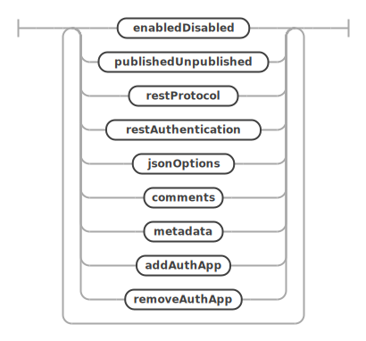
Examples
The following example creates a REST service
/myService. Please note that you need to
set the PUBLISHED option to make the REST
service publicly available.
CREATE OR REPLACE REST SERVICE /myService
COMMENTS "A simple REST service";The following example creates a REST service
/myTestService that can only be accessed on
localhost and is published at creation time.
CREATE OR REPLACE REST SERVICE localhost/myTestService
PUBLISHED
COMMENTS "A REST service that can only be accessed on localhost";The next examples shows how to set the REST service options.
CREATE OR REPLACE REST SERVICE localhost/myTestService
COMMENTS "A simple REST service"
AUTHENTICATION
PATH "/authentication"
REDIRECTION DEFAULT
VALIDATION DEFAULT
PAGE CONTENT DEFAULT
OPTIONS {
"headers": {
"Access-Control-Allow-Credentials": "true",
"Access-Control-Allow-Headers": "Content-Type, Authorization, X-Requested-With, Origin, X-Auth-Token",
"Access-Control-Allow-Methods": "GET, POST, PUT, DELETE, OPTIONS"
},
"http": {
"allowedOrigin": "auto"
},
"logging": {
"exceptions": true,
"request": {
"body": true,
"headers": true
},
"response": {
"body": true,
"headers": true
}
},
"returnInternalErrorDetails": true,
"includeLinksInResults": false
};2.2.1 Building a ServiceRequestPath
When creating or accessing a REST service a
serviceRequestPath has to be specified
which uniquely identifies the REST service across the
MySQL REST Service.
It consists of three components.
serviceDevelopersIdentifier(optional) - When set, the REST service is only available to the developers listed.hostAndPortIdentifier(optional) - When set, the access to the REST service is limited to the given host and port.requestPathIdentifier- The URL context root path the REST service will be served from.
In many cases setting the
requestPathIdentifier will be
sufficient.
The hostAndPortIdentifier only needs to
be set if a REST service should only be made available
through access via a specific host, like
localhost when the MySQL Router is
co-located with the client application.
The serviceDevelopersIdentifier will be
set automatically when a REST service is cloned for
development by a given developer. Should such a REST
service be made available to more developers, the list
of developers can be extended via an ALTER REST SERVICE
command.
serviceDevelopersIdentifier:
serviceDeveloperIdentifier (
COMMA_SYMBOL serviceDeveloperIdentifier
)* AT_SIGN_SYMBOL?
;
hostAndPortIdentifier: (
(dottedIdentifier | AT_TEXT_SUFFIX) (
COLON_SYMBOL INT_NUMBER
)?
)
;
requestPathIdentifier:
DIV_OPERATOR dottedIdentifier (DIV_OPERATOR dottedIdentifier)?
;serviceDevelopersIdentifier ::= 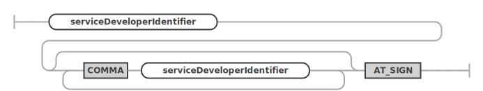
hostAndPortIdentifier ::= 
requestPathIdentifier ::= 
2.2.2 Enabling or Disabling a REST Service at Creation Time
The enabledDisabled option specifies
whether the REST service should be enabled or disabled.
REST services are created in the ENABLED state by
default. The state can be changed via the ALTER REST SERVICE
statement.
Please also see the publishedUnpublished
option which determines if a REST service is served by
MySQL Routers.
enabledDisabled:
ENABLED
| DISABLED
;enabledDisabled ::=
2.2.3 Publishing a REST Service at Creation Time
The publishedUnpublished option
specifies whether the REST service should be in
PUBLISHED or UNPUBLISHED
state. REST services are created in the
UNPUBLISHED state by default.
A REST service in UNPUBLISHED state will
only be served by MySQL Routers that are bootstrapped
for development using the
--mrs-development <user> option. To
make a REST service publicly available on all MySQL
Routers it needs to be set to the PUBLISHED
state using the ALTER REST SERVICE
statement.
publishedUnpublished:
PUBLISHED_SYMBOL
| UNPUBLISHED_SYMBOL
;publishedUnpublished ::= 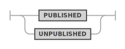
2.2.4 REST Service Authentication Settings
Each REST service requires allows for specific authentication settings.
restAuthentication ::= 
- AUTHENTICATION PATH
- The html path used for authentication handling for
this REST service. Specified as a sub-path to the REST
service path. If not explicitly set, the default is path
is
/authenticationis used. - The following endpoints will be made available for
<service_path>/<auth_path>/login/status/logout/completed
- The html path used for authentication handling for
this REST service. Specified as a sub-path to the REST
service path. If not explicitly set, the default is path
is
- AUTHENTICATION REDIRECTION
- The authentication workflow will redirect to this
URL after successful- or failed login. Specified as a
sub-path to the REST service path. If this option is not
set explicitly, the workflow will redirect to
<service_path>/<auth_path>/completedif the<service_path>/<auth_path>/login?onCompletionRedirectparameter has not been set.
- The authentication workflow will redirect to this
URL after successful- or failed login. Specified as a
sub-path to the REST service path. If this option is not
set explicitly, the workflow will redirect to
- AUTHENTICATION VALIDATION
- A regular expression to validate the
<service_path>/<auth_path>/login?onCompletionRedirectparameter. If set, this allows to limit the possible URLs an application can specify for this parameter.
- A regular expression to validate the
- AUTHENTICATION PAGE CONTENT
- If this option is set its content will replace the
page content of the
<service_path>/<auth_path>/completedpage.
- If this option is set its content will replace the
page content of the
2.2.5 REST Service Json Options
The jsonOptions allow to set a number of specific options for the service.
jsonOptions:
OPTIONS jsonValue
;jsonOptions ::=
These options can include the following JSON keys.
headers- Allows the specification of HTTP headers. Please refer to the HTTP header documentation for details.httpallowedOrigin- The setting for Access-Control-Allow-Origin HTTP header. Can either be set to*,null,<origin>orauto. When set toauto, the MySQL Routers will return the origin of the specific client making the request.
httpMethodsAllowedForUnauthorizedAccess- If a REST objects is configured to not require authentication, only GET is allowed by default. In a testing environment it might be desireable to allow all HTTP methods. In that case this option can be set to a list of allowed methods, e.g. [“GET”, “POST”, “PUT”, “DELETE”]loggingexceptions- If exceptions should be logged.requestsbody- If the content of request bodies should be logged.headers- If the content of request headers should be logged.
responsebody- If the content of response bodies should be logged.headers- If the content of response headers should be logged.
returnInternalErrorDetails- If internal errors should be returned. This is useful for application development but should be turned off for production deployments.includeLinksInResults- If set to false, the results do not include navigation links.defaultStaticContent- Allows the definition of static content forrequest pathof the REST service that will be returned for file paths matching the given JSON keys. A JSON keyindex.htmlwill be served as/myService/index.htmlby the MySQL Router if therequest pathof the REST service has been set to/myService. The file content needs to be Base64 encoded. If the same JSON key is used fordefaultStaticContentas well as fordefaultRedirects, the redirect is prioritized.defaultRedirects- Is used to define internal redirects performed by the MySQL Router. This can be used to expose content on therequest pathof the of a REST service. A JSON keyindex.htmlholding the value/myService/myContentSet/index.htmlwill exposed the corresponding file from the given path as/myService/index.htmlif therequest pathof the REST service has been set to/myService.directoryIndexDirective- Holds an ordered list of files that should be returned when a directory path has been requested. The first matching file that is available will be returned. ThedirectoryIndexDirectiveis recursively applies to all directory paths exposed by the MySQL Router. To change thedirectoryIndexDirectivefor a given REST object, the corresponding option needs to be set for that object.
All other keys will be ignored and can be used to store custom metadata about the service. It is a good practice to include a unique prefix when adding custom keys to avoid them be overwritten by future MRS options.
Examples
{
"headers": {
"Access-Control-Allow-Credentials": "true",
"Access-Control-Allow-Headers": "Content-Type, Authorization, X-Requested-With, Origin, X-Auth-Token",
"Access-Control-Allow-Methods": "GET, POST, PUT, DELETE, OPTIONS"
},
"http": {
"allowedOrigin": "auto"
},
"logging": {
"exceptions": true,
"request": {
"body": true,
"headers": true
},
"response": {
"body": true,
"headers": true
}
},
"returnInternalErrorDetails": true,
"includeLinksInResults": false
}2.2.6 REST Service Comments
The comments can hold a description of the REST service. The maximal length is of the comments string is 512 characters.
comments:
COMMENTS quotedText
;comments ::= 
2.2.7 REST Service Metadata
The metadata can hold any JSON data. It can later be consumed by a front end implementation to dynamically render certain attributes, like a specific icon or a color.
metadata:
METADATA_SYMBOL jsonValue
;2.3 CREATE REST SCHEMA
The CREATE REST SCHEMA statement is used to create a new or replace an existing REST schema. Each REST schema directly maps to a database schema and allows the database schema objects (tables, views and stored procedures) to be exposed via REST endpoints.
Note: Adding a REST schema to a REST service does not automatically expose any database schema objects via REST. The corresponding
CREATE REST DATA MAPPING VIEW,CREATE REST PROCEDURE,CREATE REST FUNCTIONddl commands need to be called to explicitly expose a database schema object.
Each REST schema belongs to a REST service, which has to be created first. One REST service can hold many REST schemas.
Each REST schema can have its own options, authentication apps and supports a different set of authentication users.
SYNTAX
createRestSchemaStatement:
CREATE (OR REPLACE)? REST SCHEMA schemaRequestPath? (
ON SERVICE? serviceRequestPath
)? FROM schemaName restSchemaOptions?
;
restSchemaOptions: (
enabledDisabled
| authenticationRequired
| itemsPerPage
| jsonOptions
| comments
| metadata
)+
;createRestSchemaStatement ::= 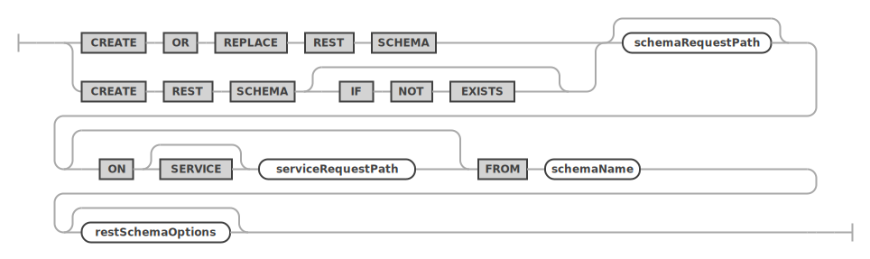
restSchemaOptions ::= 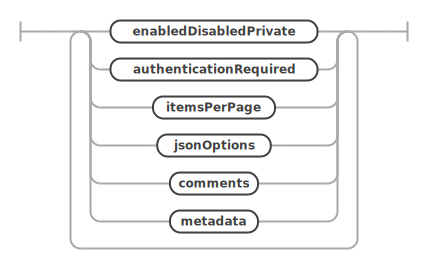
Examples
The following example creates a REST schema
/sakila on the REST service
/myService.
CREATE OR REPLACE REST SCHEMA /sakila ON SERVICE /myService
FROM `sakila`
COMMENTS "The sakila schema";2.3.1 Enabling or Disabling a REST Schema at Creation Time
The enabledDisabled option specifies
whether the REST schema should be enabled or disabled
what it is created.
enabledDisabled:
ENABLED
| DISABLED
;enabledDisabled ::=
2.3.2 Requiring Authentication for REST Schema Access
The authenticationRequired option
specifies if a REST schema and its objects require
authentication before accessing their REST
endpoints.
authenticationRequired:
AUTHENTICATION NOT? REQUIRED
;authenticationRequired ::= 
2.3.3 Specifying the Default Page Count
The itemsPerPage option can be used to
specify the default number of items returned for queries
run against this REST schema.
itemsPerPage:
ITEMS PER PAGE itemsPerPageNumber
;itemsPerPage ::= 
The number of items per page can also be specified for each REST object individually.
2.3.4 REST Schema Json Options
The jsonOptions allow to set a number of specific options for the service.
jsonOptions:
OPTIONS jsonValue
;jsonOptions ::=
These options can include the following JSON keys.
defaultStaticContent- This option serves the same purpose as described in the REST Configuration Json Options.defaultRedirects- This option serves the same purpose as described in the REST Configuration Json Options.directoryIndexDirective- This option serves the same purpose as described in the REST Configuration Json Options.
All other keys will be ignored and can be used to store custom metadata about the schema. It is a good practice to include a unique prefix when adding custom keys to avoid them be overwritten by future MRS options.
2.3.5 REST Schema Comments
The comments can hold a description of the REST schema. The maximal length is of the comments string is 512 characters.
comments:
COMMENTS quotedText
;comments ::=
2.3.6 REST Schema Metadata
The metadata can hold any JSON data. It can later be consumed by a front end implementation to dynamically render certain attributes, like a specific icon or a color.
metadata:
METADATA_SYMBOL jsonValue
;2.4 CREATE REST VIEW
The CREATE REST DATA MAPPING VIEW
statement is used to add REST endpoints for database
schema tables or views. Their data will be served as
JSON documents.
The structure of the served JSON documents is defined using an extended GraphQL syntax. This allows to define even complex REST data mapping views in a simple and human readable way. Please see the corresponding GraphQL section about how to design the GraphQL definition for a REST data mapping view.
Please see the MRS Developer’s Guide to learn more about JSON data mapping views.
SYNTAX
createRestViewStatement:
CREATE (OR REPLACE)? REST DATA? MAPPING? VIEW viewRequestPath (
ON serviceSchemaSelector
)? AS qualifiedIdentifier (
CLASS restObjectName
)? graphQlCrudOptions? graphQlObj? restObjectOptions?
;
serviceSchemaSelector:
(SERVICE serviceRequestPath)? SCHEMA schemaRequestPath
;
restObjectOptions: (
enabledDisabled
| authenticationRequired
| itemsPerPage
| jsonOptions
| comments
| metadata
| restViewMediaType
| restViewFormat
| restViewAuthenticationProcedure
)+
;createRestViewStatement ::= 
serviceSchemaSelector ::= 
restObjectOptions ::= 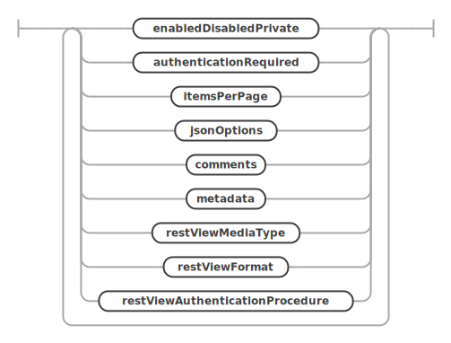
Examples
The following example adds a REST data mapping view
for the sakila.city database schema
table.
CREATE REST VIEW /city
ON SERVICE /myService SCHEMA /sakila
AS `sakila`.`city` {
cityId: city_id @SORTABLE,
city: city,
countryId: country_id,
lastUpdate: last_update
}
AUTHENTICATION REQUIRED;Querying the REST data mapping view using the TypeScript SDK returns the following JSON document.
ts> myService.sakila.city.findFirst();
{
"city": "A Corua (La Corua)",
"links": [
{
"rel": "self",
"href": "/myService/sakila/city/1"
}
],
"cityId": 1,
"countryId": 87,
"lastUpdate": "2006-02-15 04:45:25.000000",
"_metadata": {
"etag": "EE93452B41984F3F5BBB0395CCB2CED00F5C748FEEA4A36CCD749CC3F85B7CEA"
}
}The next example adds the referenced table
sakila.country to the REST data mapping
view.
CREATE OR REPLACE REST VIEW /city
ON SERVICE /myService SCHEMA /sakila
AS `sakila`.`city` {
cityId: city_id @SORTABLE,
city: city,
countryId: country_id,
lastUpdate: last_update,
country: sakila.country {
countryId: country_id @SORTABLE,
country: country,
lastUpdate: last_update
}
}
AUTHENTICATION REQUIRED;This is what the REST data mapping view looks like in the interactive MySQL REST Object Dialog in the MySQL Shell for VS Code extension.
 ı
ı
Running a TypeScript SDK query against this new REST endpoint returns the following JSON Document.
ts> myService.sakila.city.findFirst();
{
"city": "A Corua (La Corua)",
"links": [
{
"rel": "self",
"href": "/myService/sakila/city/1"
}
],
"cityId": 1,
"country": {
"country": "Spain",
"countryId": 87,
"lastUpdate": "2006-02-15 04:44:00.000000"
},
"countryId": 87,
"lastUpdate": "2006-02-15 04:45:25.000000",
"_metadata": {
"etag": "FFA2187AD4B98DF48EC40B3E807E0561A71D02C2F4F5A3B953AA6CB6E41CAD16"
}
}2.4.1 Preconditions
You define a REST data mapping view against a set of tables related by primary key (PK), foreign key (FK) or unique key constraints (UK). The following rules apply:
- The constraints must be declared in the database.
- The relationships type can be 1-to-1, 1-to-N and N-to-M (using a mapping table with two FKs). The N-to-M relationship can be thought of as the combination of 1-to-N and 1-to-1 relationship
- Columns of two or more tables with 1-to-1 or N-to-1 relationships can be merged into the same JSON object via UNNEST. Otherwise a nested JSON object is created.
- Tables with a 1-to-N relationship create a nested JSON array.
- Each item in the data mapping view is one JSON object, which is typically a hierarchy of nested objects and arrays.
- Each application object is built from values originating from one or multiple rows from the underlying tables of that view. Typically, each table contributes to one (nested) JSON object.
2.4.2 Enabling or Disabling a REST View at Creation Time
The enabledDisabled option specifies
whether the REST data mapping view should be enabled or
disabled when it is created.
enabledDisabled:
ENABLED
| DISABLED
;enabledDisabled ::=
2.4.3 Requiring Authentication for REST Views
The authenticationRequired option
specifies if a REST data mapping view requires
authentication before accessing its REST endpoints.
authenticationRequired:
AUTHENTICATION NOT? REQUIRED
;authenticationRequired ::=
2.4.4 Specifying the Page Count for REST Views
The itemsPerPage option can be used to
specify the number of items returned for queries run
against the REST data mapping view.
itemsPerPage:
ITEMS PER PAGE itemsPerPageNumber
;itemsPerPage ::=
The number of items per page can also be specified for each REST object individually.
2.4.5 Setting the Media Type for REST Views
If this REST data mapping view returns a specific
MIME type it can be set via the
restViewMediaType option. If MRS should try
to automatically detect the file type based on the
content of the file the AUTODETECT option
can be used.
restViewMediaType:
MEDIA TYPE (quotedText | AUTODETECT)
;restViewMediaType ::= 
2.4.6 Setting the Result Format for REST Views
A REST data mapping view can return one of the
following formats which can be set with the
restViewFormat option.
- FEED: A list of result JSON objects
- ITEM: A single result item
- MEDIA: A single blob item. The
restViewMediaTypeoption is used to set the corresponding MIME type in this case.
restViewFormat:
FORMAT (FEED | ITEM | MEDIA)
;restViewFormat ::= 
2.4.7 Using a Custom Authentication Procedure for a REST View
In case the built in authentication handling does not cover the specific use case for a REST data mapping view, a custom MySQL stored procedure can be used to handle the authentication check for the given user and the requested CRUD operation.
The referenced MySQL stored procedure has to be in
the same schema as the database schema object and it has
to accept the following parameters:
(IN user_id BINARY(16), IN schema VARCHAR(255), IN object VARCHAR(255), IN crud_operation VARCHAR(4)).
It needs to returns true or
false.
restViewAuthenticationProcedure ::=
2.4.8 Defining the GraphQL definition for a REST View
graphQlObj:
OPEN_CURLY graphQlPair (COMMA graphQlPair)* CLOSE_CURLY
| OPEN_CURLY CLOSE_CURLY
;
graphQlCrudOptions: (
AT_INSERT
| AT_NOINSERT
| AT_UPDATE
| AT_NOUPDATE
| AT_DELETE
| AT_NODELETE
| AT_CHECK
| AT_NOCHECK
)+
;
graphQlPair:
graphKeyValue COLON qualifiedIdentifier (
AT_IN
| AT_OUT
| AT_INOUT
| AT_NOCHECK
| AT_SORTABLE
| AT_NOFILTERING
| AT_ROWOWNERSHIP
| AT_UNNEST
| AT_KEY
| AT_DATATYPE OPEN_PAR graphQlDatatypeValue CLOSE_PAR
| graphQlCrudOptions
)? graphQlObj?
;
graphQlValue:
qualifiedIdentifier
| graphQlObj
;graphQlObj ::= 
graphQlCrudOptions ::= 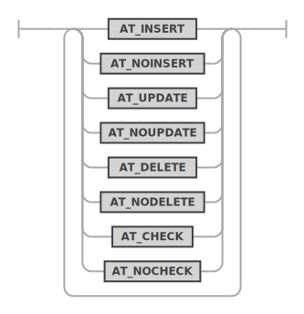
graphQlPair ::= 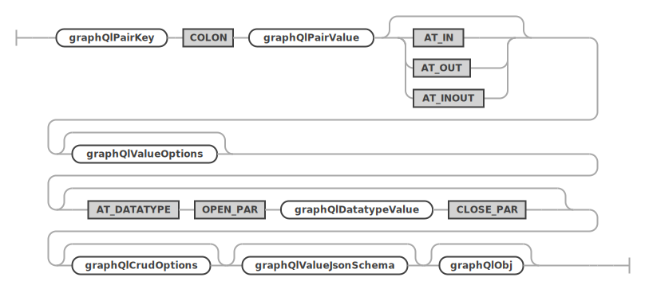
graphQlValue ::= 
2.4.9 REST View Metadata
The metadata can hold any JSON data. It can later be consumed by a front end implementation to dynamically render certain attributes, like a specific icon or a color.
metadata:
METADATA_SYMBOL jsonValue
;2.4.10 JSON Options for Views
jsonOptions:
OPTIONS jsonValue
;The following additional options can be configured for a view in a JSON object through the OPTIONS clause:
cache_ttlenables caching for GET requests. Specifies the number of seconds to keep the response in the cache, after which it will be discarded until a new request comes in or when the cache fills up.
2.5 CREATE REST PROCEDURE
The CREATE REST PROCEDURE statement is
used to add REST endpoints for database schema stored
procedures. It uses the same extended
GraphQL syntax as defined for REST data mapping
views to describe the REST procedure’s parameters and
result sets. Please make sure to study the corresponding
section.
SYNTAX
createRestProcedureStatement:
CREATE (OR REPLACE)? REST PROCEDURE procedureRequestPath (
ON serviceSchemaSelector
)? AS qualifiedIdentifier (PARAMETERS restObjectName? graphQlObj)?
restProcedureResult* restObjectOptions?
;
serviceSchemaSelector:
(SERVICE serviceRequestPath)? SCHEMA schemaRequestPath
;
restObjectOptions: (
enabledDisabled
| authenticationRequired
| itemsPerPage
| jsonOptions
| comments
| metadata
| restViewMediaType
| restViewFormat
| restViewAuthenticationProcedure
)+
;
restProcedureResult:
RESULT restResultName? graphQlObj
;createRestProcedureStatement ::= 
serviceSchemaSelector ::=
restObjectOptions ::=
restProcedureResult ::= 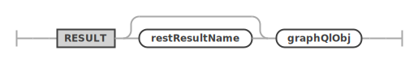
2.5.1 JSON Options for Procedures
jsonOptions:
OPTIONS jsonValue
;The following additional options can be configured for a view in a JSON object through the OPTIONS clause:
cache_ttlenables caching for GET or PUT requests. Specifies the number of seconds to keep the response in the cache, after which it will be discarded until a new request comes in or when the cache fills up.
2.6 CREATE REST FUNCTION
The CREATE REST FUNCTION statement is
used to add REST endpoints for database schema stored
function. It uses the same extended
GraphQL syntax as defined for REST data mapping
views to describe the REST functions’s parameters and
result. Please make sure to study the corresponding
section.
SYNTAX
createRestFunctionStatement:
CREATE (OR REPLACE)? REST FUNCTION functionRequestPath (
ON serviceSchemaSelector
)? AS qualifiedIdentifier (PARAMETERS restObjectName? graphQlObj)?
restFunctionResult? restObjectOptions?
;
serviceSchemaSelector:
(SERVICE serviceRequestPath)? SCHEMA schemaRequestPath
;
restObjectOptions: (
enabledDisabled
| authenticationRequired
| itemsPerPage
| jsonOptions
| comments
| metadata
| restViewMediaType
| restViewFormat
| restViewAuthenticationProcedure
)+
;
restFunctionResult:
RESULT restResultName? graphQlObj
;createRestFunctionStatement ::= 
serviceSchemaSelector ::=
restObjectOptions ::=
restFunctionResult ::= 
2.6.1 JSON Options for Functions
jsonOptions:
OPTIONS jsonValue
;The following additional options can be configured for a view in a JSON object through the OPTIONS clause:
cache_ttlenables caching for GET or PUT requests. Specifies the number of seconds to keep the response in the cache, after which it will be discarded until a new request comes in or when the cache fills up.
2.7 CREATE REST CONTENT SET
The CREATE REST CONTENT SET statement is
used to add REST endpoints for static content.
SYNTAX
createRestContentSetStatement:
CREATE (OR REPLACE)? REST CONTENT SET
contentSetRequestPath (
ON SERVICE? serviceRequestPath
)? (FROM directoryFilePath)? restContentSetOptions?
;
restContentSetOptions: (
enabledDisabled
| authenticationRequired
| jsonOptions
| comments
)+
;createRestContentSetStatement ::= 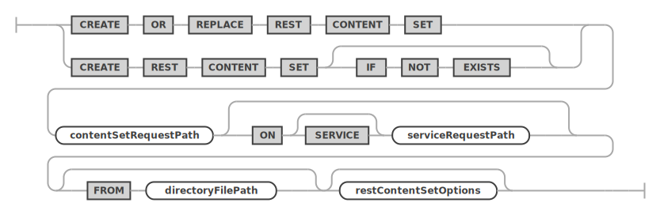
restContentSetOptions ::= 
2.8 CREATE REST AUTH APP
The CREATE REST AUTH APP statement is
used to add REST authentication app to a REST
service.
SYNTAX
createRestAuthAppStatement:
CREATE (OR REPLACE)? REST (
AUTH
| AUTHENTICATION
) APP authAppName (
ON SERVICE? serviceRequestPath
)? VENDOR (MRS | MYSQL | vendorName) restAuthAppOptions?
;
restAuthAppOptions: (
enabledDisabled
| comments
| allowNewUsersToRegister
| defaultRole
)+
;
allowNewUsersToRegister:
ALLOW NEW USERS (TO REGISTER)?
;
defaultRole:
DEFAULT ROLE quotedText
;createRestAuthAppStatement ::= 
restAuthAppOptions ::= 
allowNewUsersToRegister ::=
defaultRole ::= 
2.9 CREATE REST USER
The CREATE REST USER statement is used
to add REST user to a REST authentication app.
SYNTAX
createRestUserStatement:
CREATE (OR REPLACE)? REST USER userName AT_SIGN
authAppName (IDENTIFIED BY userPassword)? userOptions?
;
userName:
quotedText
;
userPassword:
quotedText
;
userOptions: (accountLock | appOptions | jsonOptions)+
;
appOptions:
APP OPTIONS jsonValue
;
accountLock:
ACCOUNT ( LOCK | UNLOCK )
;
createRestUserStatement ::= 
userOptions ::= 
appOptions ::= 
accountLock ::= 
2.10 CREATE REST ROLE
Creates a REST role to the specified or currently active REST service. Role names must be unique across all services.
SYNTAX
createRestRoleStatement:
CREATE (OR REPLACE)? REST ROLE roleName (
EXTENDS parentRoleName
)? (ON (ANY SERVICE | SERVICE? serviceRequestPath))? restRoleOptions?
;
restRoleOptions: (jsonOptions | comments)+
;createRestRoleStatement ::= 
restRoleOptions ::=
3 ALTER
3.1 ALTER REST SERVICE
An existing REST service can be altered by using the
ALTER REST SERVICE statement. It uses the
same restServiceOptions as used by the CREATE REST SERVICE
statement. Please see the discussion of the options there.
SYNTAX
alterRestServiceStatement:
ALTER REST SERVICE serviceRequestPath (
NEW REQUEST PATH newServiceRequestPath
)? restServiceOptions?
;
restServiceOptions: (
enabledDisabled
| restAuthentication
| jsonOptions
| comments
| metadata
)+
;alterRestServiceStatement ::= 
restServiceOptions ::=
Examples
The following example alters a REST service
/myService by setting a new comment.
ALTER REST SERVICE /myService
COMMENTS "A simple, improved REST service";3.2 ALTER REST SCHEMA
An existing REST schema can be altered by using the
ALTER REST SCHEMA statement. It uses the
same restSchemaOptions as used by the CREATE REST SCHEMA
statement. Please see the discussion of the options
there.
SYNTAX
alterRestSchemaStatement:
ALTER REST DATABASE schemaRequestPath? (
ON SERVICE? serviceRequestPath
)? (
NEW REQUEST PATH newSchemaRequestPath
)? (FROM schemaName)? restSchemaOptions?
;
restSchemaOptions: (
enabledDisabled
| authenticationRequired
| itemsPerPage
| jsonOptions
| comments
| metadata
)+
;alterRestSchemaStatement ::= 
restSchemaOptions ::=
Examples
The following example alters a REST schema
/myService to use a new request path
/myPublicService.
ALTER REST SCHEMA /sakila ON SERVICE /myService
NEW REQUEST PATH /myPublicService;3.3 ALTER REST VIEW
The ALTER REST DATA MAPPING VIEW
statement is used to alter existing REST data mapping
views.
Please see the corresponding GraphQL section about how to design the GraphQL definition for a REST data mapping view.
Please see the MRS Developer’s Guide to learn more about JSON data mapping views.
SYNTAX
alterRestViewStatement:
ALTER REST DATA? MAPPING? VIEW
viewRequestPath (ON serviceSchemaSelector)? (
NEW REQUEST PATH newViewRequestPath
)? (
CLASS restObjectName graphQlCrudOptions? graphQlObj?
)? restObjectOptions?
;
serviceSchemaSelector:
(SERVICE serviceRequestPath)? DATABASE schemaRequestPath
;
restObjectOptions: (
enabledDisabled
| authenticationRequired
| itemsPerPage
| jsonOptions
| comments
| metadata
| restViewMediaType
| restViewFormat
| restViewAuthenticationProcedure
)+
;alterRestViewStatement ::= 
serviceSchemaSelector ::=
restObjectOptions ::=
Examples
The following example alters a REST data mapping view
for the sakila.city database schema table
and sets a new list of fields.
ALTER REST VIEW /city
ON SERVICE /myService SCHEMA /sakila
FROM `sakila`.`city` AS MyServiceSakilaCity {
cityId: city_id @SORTABLE,
city: city
};3.4 ALTER REST PROCEDURE
The ALTER REST PROCEDURE statement is
used to alter REST endpoints for database schema stored
procedures.
It uses the same extended GraphQL syntax as defined for REST data mapping views to describe the REST procedure’s parameters and result sets. Please make sure to study the corresponding section.
SYNTAX
alterRestProcedureStatement:
ALTER REST PROCEDURE procedureRequestPath (
ON serviceSchemaSelector
)? (
NEW REQUEST PATH newProcedureRequestPath
)? (PARAMETERS restObjectName? graphQlObj)? restProcedureResult* restObjectOptions?
;
serviceSchemaSelector:
(SERVICE serviceRequestPath)? DATABASE schemaRequestPath
;
restObjectOptions: (
enabledDisabled
| authenticationRequired
| itemsPerPage
| jsonOptions
| comments
| metadata
| restViewMediaType
| restViewFormat
| restViewAuthenticationProcedure
)+
;alterRestProcedureStatement ::= 
serviceSchemaSelector ::=
restObjectOptions ::=
3.5 ALTER REST FUNCTION
The ALTER REST FUNCTION statement is
used to alter REST endpoints for database schema stored
functions.
It uses the same extended GraphQL syntax as defined for REST data mapping views to describe the REST procedure’s parameters and result sets. Please make sure to study the corresponding section.
SYNTAX
alterRestFunctionStatement:
ALTER_SYMBOL REST_SYMBOL FUNCTION_SYMBOL functionRequestPath (
ON_SYMBOL serviceSchemaSelector
)? (
NEW_SYMBOL REQUEST_SYMBOL PATH_SYMBOL newFunctionRequestPath
)? (PARAMETERS_SYMBOL restObjectName? graphQlObj)? restFunctionResult* restObjectOptions?
;
serviceSchemaSelector:
(SERVICE serviceRequestPath)? DATABASE schemaRequestPath
;
restObjectOptions: (
enabledDisabled
| authenticationRequired
| itemsPerPage
| jsonOptions
| comments
| metadata
| restViewMediaType
| restViewFormat
| restViewAuthenticationProcedure
)+
;alterRestFunctionStatement ::= 
serviceSchemaSelector ::=
restObjectOptions ::=
3.6 ALTER REST USER
Change password and options for an existing REST user account.
SYNTAX
alterRestUserStatement:
ALTER_SYMBOL REST_SYMBOL USER_SYMBOL userName AT_SIGN_SYMBOL authAppName (
ON_SYMBOL SERVICE_SYMBOL? serviceRequestPath
)? (IDENTIFIED_SYMBOL BY_SYMBOL userPassword)? userOptions?
;
4 DROP
4.1 DROP REST SERVICE
An existing REST service can be dropped by using the
DROP REST SERVICE statement.
SYNTAX
dropRestServiceStatement:
DROP REST SERVICE serviceRequestPath
;dropRestServiceStatement ::=
Examples
The following example drops a REST service with the
request path /myService.
DROP REST SERVICE /myService;4.2 DROP REST SCHEMA
An existing REST schema can be dropped by using the
DROP REST SCHEMA statement.
SYNTAX
dropRestSchemaStatement:
DROP REST DATABASE schemaRequestPath (
FROM SERVICE? serviceRequestPath
)?
;dropRestSchemaStatement ::= 
Examples
The following example drops a REST schema using the
request path /myService.
DROP REST SCHEMA /sakila FROM SERVICE /myService;4.3 DROP REST VIEW
The DROP REST DATA MAPPING VIEW
statement is used to drop existing REST data mapping
views.
SYNTAX
dropRestViewStatement:
DROP REST DATA? MAPPING? VIEW
viewRequestPath (FROM serviceSchemaSelector)?
;dropRestViewStatement ::= 
Examples
The following example drops a REST data mapping view
using the request path /city.
DROP REST VIEW /city
FROM SERVICE /myService SCHEMA /sakila;4.4 DROP REST PROCEDURE
The DROP REST PROCEDURE statement is
used to drop an existing REST procedures.
SYNTAX
dropRestProcedureStatement:
DROP REST PROCEDURE procedureRequestPath (
FROM serviceSchemaSelector
)?
;dropRestProcedureStatement ::= 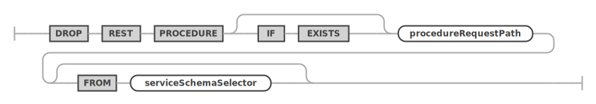
4.5 DROP REST FUNCTION
The DROP REST FUNCTION statement is used
to drop an existing REST functions.
SYNTAX
dropRestFunctionStatement:
DROP REST FUNCTION functionRequestPath (
FROM serviceSchemaSelector
)?
;dropRestFunctionStatement ::= 
4.6 DROP REST CONTENT SET
The DROP REST CONTENT SET statement is
used to drop an existing REST static content set.
SYNTAX
dropRestContentSetStatement:
DROP REST CONTENT SET contentSetRequestPath (
FROM SERVICE? serviceRequestPath
)?
;dropRestContentSetStatement ::=
4.7 DROP REST AUTH APP
The DROP REST AUTH APP statement is used
to drop an existing REST authentication app from a REST
service.
SYNTAX
dropRestAuthAppStatement:
DROP REST (AUTH | AUTHENTICATION) APP authAppName (
FROM SERVICE? serviceRequestPath
)?
;dropRestAuthAppStatement ::= 
4.8 DROP REST USER
The DROP REST USER statement is used to
drop an existing REST user from a REST authentication
app.
SYNTAX
dropRestUserStatement:
DROP REST USER userName AT_SIGN authAppName (
ON SERVICE? serviceRequestPath
)?
;dropRestUserStatement ::= 
4.9 DROP REST ROLE
Drops the named REST role.
SYNTAX
dropRestRoleStatement:
DROP REST ROLE roleName
;dropRestRoleStatement ::=
5 GRANT and REVOKE
5.1 GRANT REST
Grants REST privileges on endpoint objects to a role.
SYNTAX
grantRestPrivilegeStatement:
GRANT REST privilegeList (
ON serviceSchemaSelector (
OBJECT objectRequestPath
)?
)? TO roleName
;
privilegeList:
privilegeName
| privilegeName COMMA privilegeList
;
privilegeName:
CREATE
| READ
| UPDATE
| DELETE
;grantRestPrivilegeStatement ::= 
privilegeList ::= 
privilegeName ::= 
5.2 GRANT REST ROLE
Grants a REST role to a user account.
SYNTAX
grantRestRoleStatement:
GRANT REST ROLE roleName TO userName AT_SIGN authAppName
comments?
;grantRestRoleStatement ::= 
5.3 REVOKE REST
Revokes privileges on an REST endpoint object from a role.
SYNTAX
revokeRestPrivilegeStatement:
REVOKE REST privilegeList (
ON serviceSchemaSelector (
OBJECT objectRequestPath
)?
)? FROM roleName
;revokeRestPrivilegeStatement ::= 
5.4 REVOKE REST ROLE
Revokes a role from a REST user.
SYNTAX
revokeRestRoleStatement:
REVOKE REST ROLE roleName FROM userName AT_SIGN authAppName
;revokeRestRoleStatement ::= 
6 USE and SHOW
6.1 USE
An existing REST service can be dropped by using the
DROP REST SERVICE statement.
SYNTAX
useStatement:
USE REST serviceAndSchemaRequestPaths
;
serviceAndSchemaRequestPaths:
SERVICE serviceRequestPath
| serviceSchemaSelector
;useStatement ::= 
serviceAndSchemaRequestPaths ::= 
Examples
The following example makes the REST service with the
request path /myService the new default
REST service.
USE REST SERVICE /myService;After the default REST service has been set, the following statement can be used to set the default REST schema.
USE REST SCHEMA /sakila;The next example shows how to set the default REST service and REST schema in a single statement.
USE REST SERVICE /myService SCHEMA /sakila;6.2 SHOW REST STATUS
The SHOW REST STATUS statement is used
to get basic information about the current status of the
MySQL REST Service.
SYNTAX
showRestMetadataStatusStatement:
SHOW REST METADATA? STATUS
;showRestMetadataStatusStatement ::= 
Examples
The following example drops a REST schema using the
request path /myService.
SHOW REST STATUS;6.3 SHOW REST SERVICES
The SHOW REST SERVICES statement lists
all available REST services.
SYNTAX
showRestServicesStatement:
SHOW REST SERVICES
;showRestServicesStatement ::= 
Examples
The following example lists all REST services.
SHOW REST SERVICES;6.4 SHOW REST SCHEMAS
The SHOW REST SCHEMAS statement lists
all available REST schemas of the given or current REST
service.
SYNTAX
showRestSchemasStatement:
SHOW REST DATABASES (
(IN | FROM) SERVICE? serviceRequestPath
)?
;showRestSchemasStatement ::= 
Examples
The following example lists all REST schemas of the
REST service using the request path
/myService.
SHOW REST SERVICES FROM /myService;6.5 SHOW REST VIEWS
The SHOW REST DATA MAPPING VIEWS
statement lists all available REST data mapping views of
the given or current REST schema.
SYNTAX
showRestViewsStatement:
SHOW REST DATA? MAPPING? VIEWS (
(IN | FROM) serviceSchemaSelector
)?
;
serviceSchemaSelector:
(SERVICE serviceRequestPath)? DATABASE schemaRequestPath
;showRestViewsStatement ::= 
serviceSchemaSelector ::=
Examples
The following example lists all REST data mapping views of the given REST schema.
SHOW REST VIEWS FROM SERVICE /myService SCHEMA /sakila;6.6 SHOW REST PROCEDURES
The SHOW REST PROCEDURES statement lists
all available REST procedures of the given or current
REST schema.
SYNTAX
showRestProceduresStatement:
SHOW REST PROCEDURES (
(IN | FROM) serviceSchemaSelector
)?
;
serviceSchemaSelector:
(SERVICE serviceRequestPath)? DATABASE schemaRequestPath
;showRestProceduresStatement ::=
serviceSchemaSelector ::=
6.7 SHOW REST FUNCTIONS
The SHOW REST FUNCTIONS statement lists
all available REST functions of the given or current
REST schema.
SYNTAX
showRestFunctionsStatement:
SHOW_SYMBOL REST_SYMBOL FUNCTIONS_SYMBOL (
(IN_SYMBOL | FROM_SYMBOL) serviceSchemaSelector
)?
;
serviceSchemaSelector:
(SERVICE serviceRequestPath)? DATABASE schemaRequestPath
;showRestFunctionsStatement ::=
serviceSchemaSelector ::=
Examples
The following example lists all REST procedures of the given REST schema.
SHOW REST PROCEDURES FROM SERVICE /myService SCHEMA /sakila;6.8 SHOW REST CONTENT SETS
The SHOW REST CONTENT SETS statement
lists all available REST content sets of the given or
current REST service.
SYNTAX
showRestContentSetsStatement:
SHOW REST CONTENT SETS (
(IN | FROM) SERVICE? serviceRequestPath
)?
;showRestContentSetsStatement ::= 
Examples
The following example lists all REST content sets of the given REST service.
SHOW REST CONTENT SETS FROM SERVICE /myService;6.9 SHOW REST AUTH APPS
The SHOW REST AUTH APPS statement lists
all available REST auth apps of the given or current
REST service.
SYNTAX
showRestAuthAppsStatement:
SHOW REST AUTH APPS (
(IN | FROM) SERVICE? serviceRequestPath
)?
;showRestAuthAppsStatement ::= 
Examples
The following example lists all REST auth apps of the given REST service.
SHOW REST AUTH APPS FROM SERVICE /myService;6.10 SHOW CREATE REST SERVICE
The SHOW CREATE REST SERVICE statement
shows the corresponding DDL statement for the given REST
service.
SYNTAX
showCreateRestServiceStatement:
SHOW CREATE REST SERVICE serviceRequestPath?
;showCreateRestServiceStatement ::= 
Examples
The following example shows the DDL statement for the
REST service with request path
/myService.
SHOW CREATE REST SERVICE /myService;6.11 SHOW CREATE REST SCHEMA
The SHOW CREATE REST SCHEMA statement
shows the corresponding DDL statement for the given REST
schema.
SYNTAX
showCreateRestSchemaStatement:
SHOW CREATE REST DATABASE schemaRequestPath? (
(ON | FROM) SERVICE? serviceRequestPath
)?
;showCreateRestSchemaStatement ::= 
Examples
The following example shows the DDL statement for the given REST schema.
SHOW CREATE REST SCHEMA /sakila FROM /myService;6.12 SHOW CREATE REST VIEW
The SHOW CREATE REST DATA MAPPING VIEW
statement shows the corresponding DDL statement for the
given REST data mapping view.
SYNTAX
showCreateRestViewStatement:
SHOW CREATE REST DATA? MAPPING? VIEW viewRequestPath (
(ON | FROM) serviceSchemaSelector
)?
;
serviceSchemaSelector:
(SERVICE serviceRequestPath)? DATABASE schemaRequestPath
;showCreateRestViewStatement ::= 
serviceSchemaSelector ::=
Examples
The following example shows the DDL statement for the given REST data mapping view.
SHOW CREATE REST VIEW /city ON SERVICE /myService SCHEMA /sakila;6.13 SHOW CREATE REST PROCEDURE
The SHOW CREATE REST PROCEDURE statement
shows the corresponding DDL statement for the given REST
procedure.
SYNTAX
showCreateRestProcedureStatement:
SHOW CREATE REST PROCEDURE procedureRequestPath (
(ON | FROM) serviceSchemaSelector
)?
;
serviceSchemaSelector:
(SERVICE serviceRequestPath)? DATABASE schemaRequestPath
;showCreateRestProcedureStatement ::=
serviceSchemaSelector ::=
6.14 SHOW CREATE REST FUNCTION
The SHOW CREATE REST FUNCTION statement
shows the corresponding DDL statement for the given REST
function.
SYNTAX
showCreateRestFunctionStatement:
SHOW_SYMBOL CREATE_SYMBOL REST_SYMBOL FUNCTION_SYMBOL functionRequestPath (
(ON_SYMBOL | FROM_SYMBOL) serviceSchemaSelector
)?
;
serviceSchemaSelector:
(SERVICE serviceRequestPath)? DATABASE schemaRequestPath
;showCreateRestFunctionStatement ::= 
serviceSchemaSelector ::=
Examples
The following example shows the DDL statement for the given REST procedure.
SHOW CREATE REST PROCEDURE /inventory_in_stock ON SERVICE /myService SCHEMA /sakila;6.15 SHOW CREATE AUTH APP
The SHOW CREATE AUTH APP statement shows
the corresponding DDL statement for the given REST auth
app.
SYNTAX
showCreateRestAuthAppStatement:
SHOW CREATE REST AUTH APP authAppName (
(ON | FROM) SERVICE? serviceRequestPath
)?
;showCreateRestAuthAppStatement ::=
Examples
The following example shows the DDL statement for the given REST auth app.
SHOW CREATE REST AUTH APP "MRS" FROM SERVICE localhost/myTestService;6.16 SHOW REST ROLES
Shows a list of roles, optionally filtered by service or auth app and users that were granted the role.
SYNTAX
showRestRolesStatement:
SHOW_SYMBOL REST_SYMBOL ROLES_SYMBOL (
(ON_SYMBOL | FROM_SYMBOL) (ANY_SYMBOL SERVICE_SYMBOL | SERVICE_SYMBOL? serviceRequestPath)
)? (FOR_SYMBOL userName? AT_SIGN_SYMBOL authAppName)?
;showRestRolesStatement ::= 
6.17 SHOW REST GRANTS
Show the list of REST privileges that were granted to the given role.
SYNTAX
showRestGrantsStatement:
SHOW_SYMBOL REST_SYMBOL GRANTS_SYMBOL FOR_SYMBOL roleName
;showRestGrantsStatement ::= 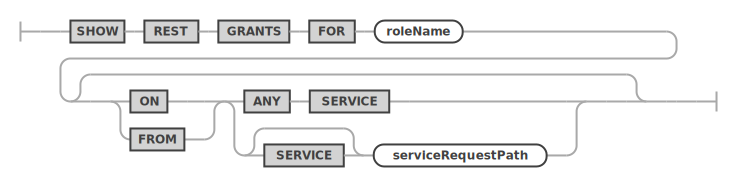
Copyright (c) 2023, 2024, Oracle and/or its affiliates.